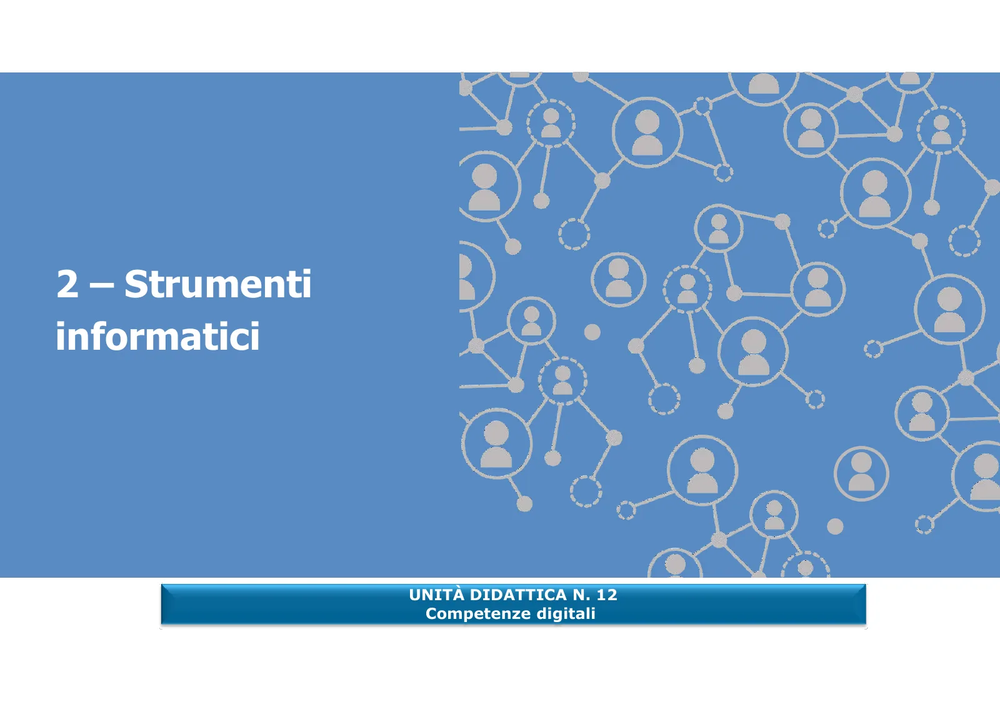
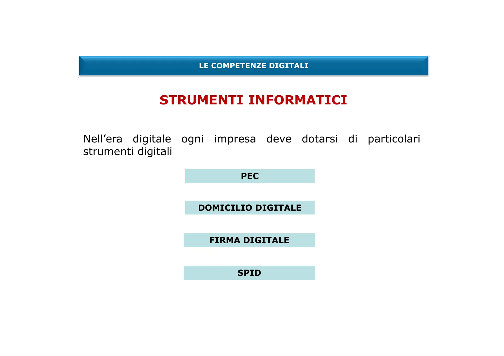
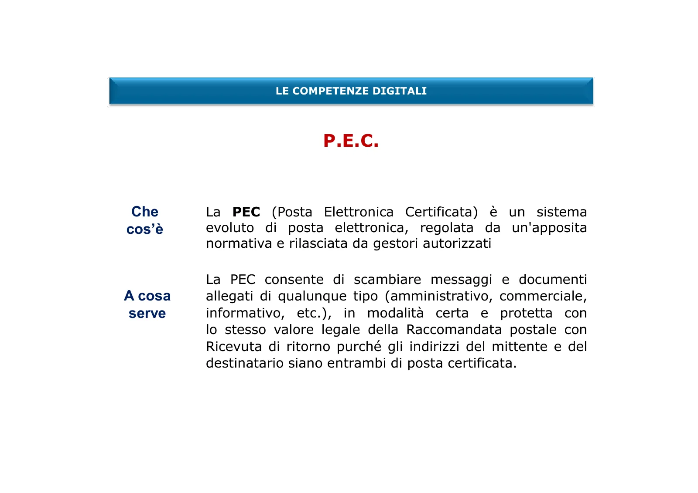
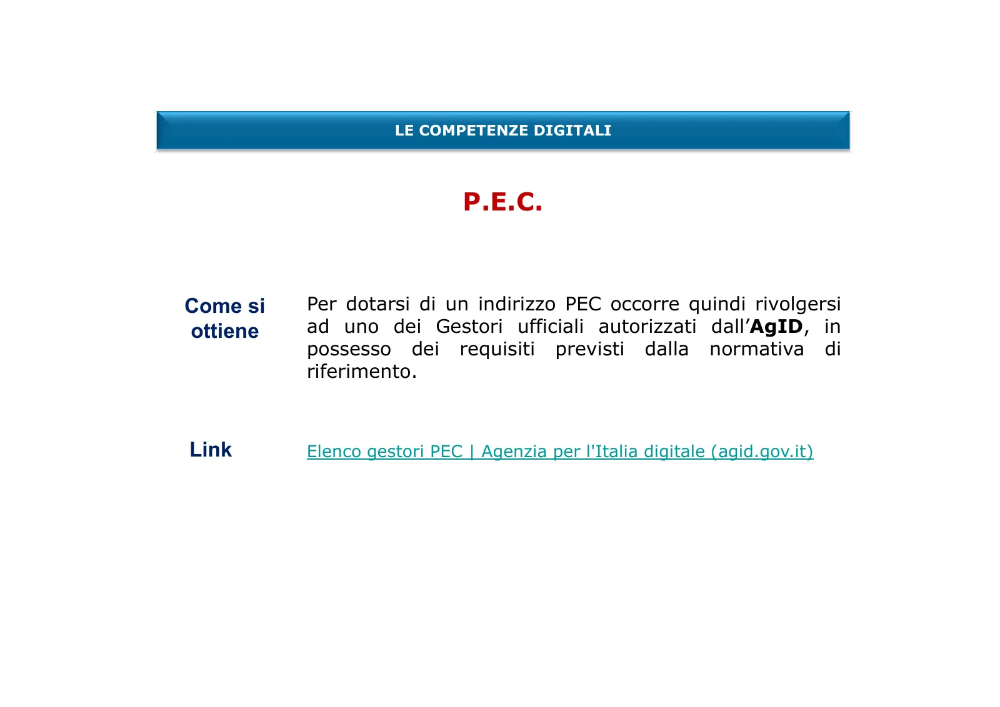
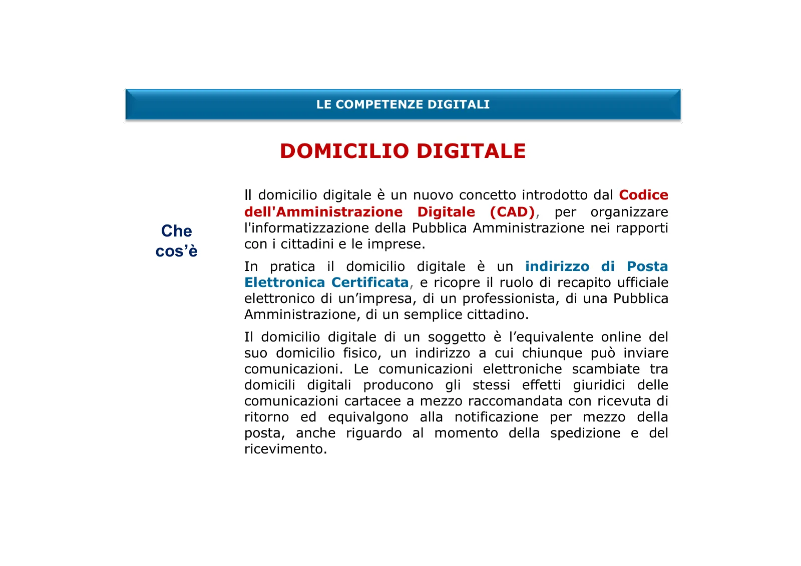
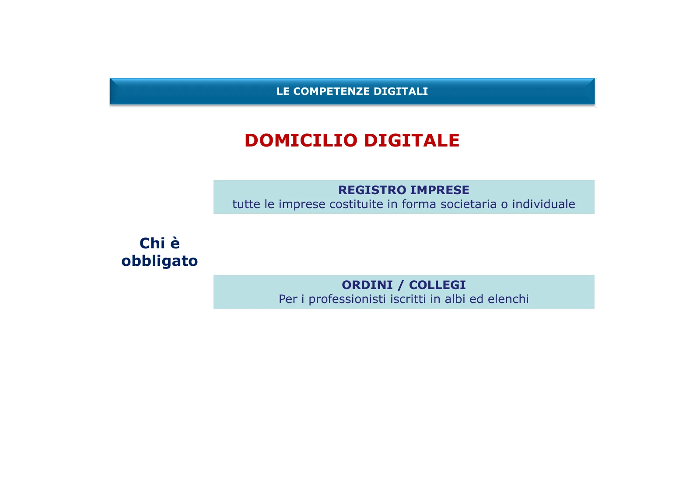
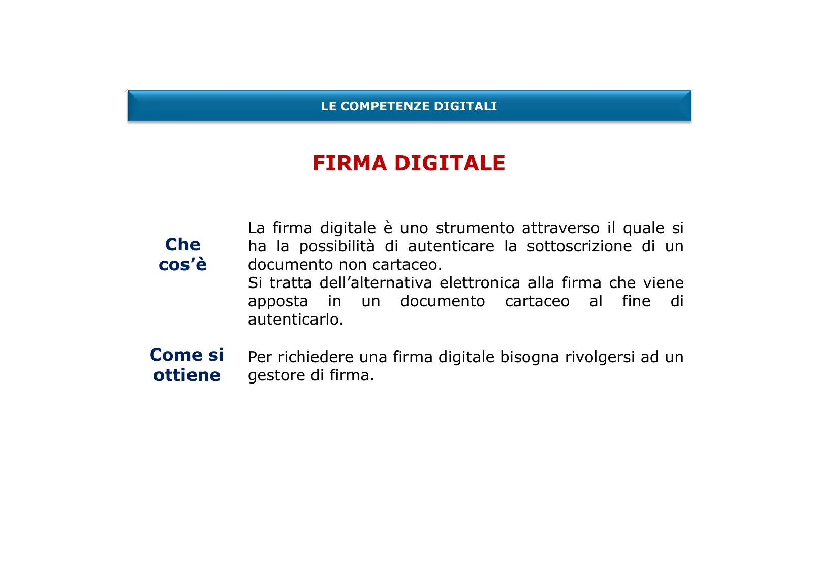
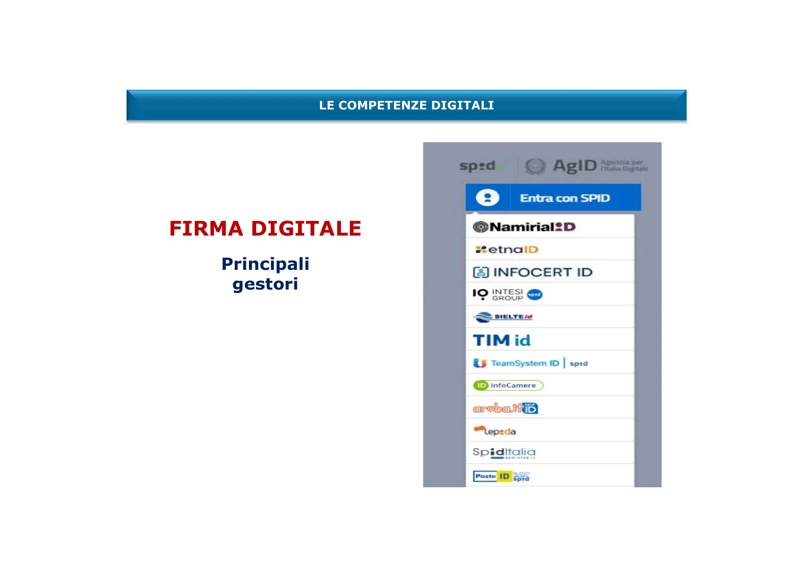
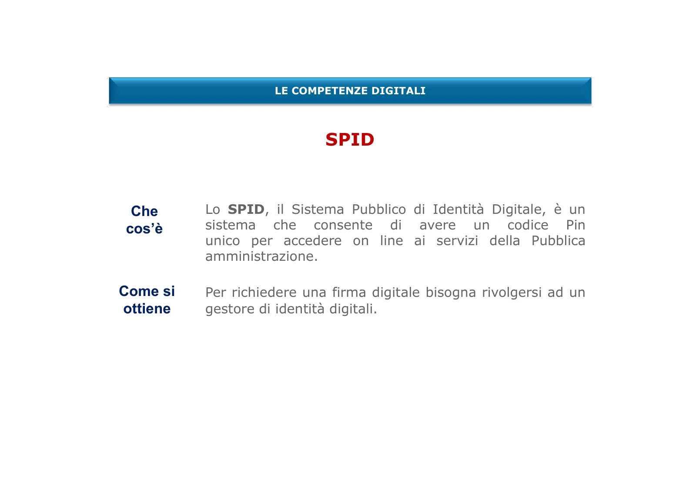

Parte A · gio 12 novembre · prima metà (1h50) · 9 slide originali · 15 integrazioni essenziali + 5 facoltative
PEC, domicilio digitale, firma, identità
Strumenti informatici, prima parte: le slide originali 1–9 su PEC, domicilio digitale, firma digitale e SPID, affiancate da simulazioni (invio PEC, firma con crittografia reale, accesso con identità digitale) ed esercizi.
Le slide del modulo · le slide originali sono intatte, quelle con l’etichetta colorata sono integrazioni
UD12 · Competenze digitali · Incontro 2 di 4 · giovedì 12 novembre 2026 · 3 ore online · parte A
PEC, domicilio digitale, firma, identità
Gli strumenti che danno valore legale alla vita digitale dell’impresa: come funzionano, a che cosa servono, come si ottengono.
Slide originali UD12 · 1–9+ simulazioni ed eserciziDocente: Ing. Antonio Adinolfi
Dovete disdire un contratto entro venerdì. Come lo dimostrate?
Raccomandata con ricevuta di ritorno, email, WhatsApp, PEC? Che cosa può dimostrare ciascuno strumento: che l’avete spedito, che è arrivato, che il testo è quello?

2 – Strumenti informatici

STRUMENTI INFORMATICI Nell’era digitale ogni impresa deve dotarsi di particolari strumenti digitali PEC DOMICILIO DIGITALE FIRMA DIGITALE SPID
Quattro strumenti, quattro domande
🪪
SPID / CIE · «Chi sei?»
Vi identifica online: accesso a Invitalia, Agenzia delle Entrate, INPS, Camera di Commercio.
📨
PEC · «È arrivato?»
Prova l’invio e la consegna di un messaggio, con data e ora.
🏠
Domicilio digitale · «Dove ti scrivo?»
L’indirizzo PEC ufficiale, iscritto in un elenco pubblico.
✍️
Firma digitale · «Chi l’ha firmato?»
Garantisce autore e integrità di un file, come una firma autografa.
Le leggi dietro gli strumenti
🪪 SPID e CIE
Art. 64 e 66 CAD · DPCM 24/10/2014 Dal 2021 la via d’ingresso ai servizi pubblici online; validi anche nell’UE (eIDAS).
📨 PEC
DPR 68/2005 · art. 48 CAD La trasmissione via PEC equivale alla notificazione per posta. Vale tra due caselle PEC.
🏠 Domicilio digitale
Art. 3-bis e 6-bis/ter/quater CAD · L. 207/2024 Obbligatorio per imprese, professionisti e, dal 2025, amministratori. Elenchi: INI-PEC, IPA, INAD.
✍️ Firma digitale
Reg. (UE) 910/2014 eIDAS art. 25 · art. 20, 24 CAD Stesso effetto della firma a mano, in tutta l’Unione europea.
CAD = Codice dell’amministrazione digitale (D.Lgs. 82/2005). Non vanno imparati a memoria: dietro ogni strumento c’è una legge che gli dà un valore che regge anche davanti a un giudice.

P.E.C. Che La PEC (Posta Elettronica Certificata) è un sistema cos’è evoluto di posta elettronica, regolata da un'apposita normativa e rilasciata da gestori autorizzati La PEC consente di scambiare messaggi e documenti A cosa allegati di qualunque tipo (amministrativo, commerciale, serve informativo, etc.), in modalità certa e protetta con lo stesso valore legale della Raccomandata postale con Ricevuta di ritorno purché gli indirizzi del mittente e del destinatario siano entrambi di posta certificata.
Scegli il canale giusto
Che cosa succede quando inviate una PEC
Email, PEC, raccomandata: che cosa dimostrano
Email ordinaria
PEC → PEC
Raccomandata A/R
Prova dell’invio
No
Sì · ricevuta di accettazione
Sì
Prova della consegna
No
Sì · ricevuta di consegna
Sì · cartolina di ritorno
Data e ora certe
No
Sì
Sì
Prova del contenuto
No
Sì, il messaggio è conservato dal gestore per un periodo
Solo della busta
Tempo e costo
Immediata, gratuita
Immediata, canone annuo
Giorni, costo per invio
Art. 48 CAD: la trasmissione via PEC equivale alla notificazione a mezzo posta; le ricevute fanno prova (DPR 68/2005, art. 6).

P.E.C. Come si Per dotarsi di un indirizzo PEC occorre quindi rivolgersi ottiene ad uno dei Gestori ufficiali autorizzati dall’AgID, in possesso dei requisiti previsti dalla normativa di riferimento. Link Elenco gestori PEC | Agenzia per l'Italia digitale (agid.gov.it)
Cinque errori da evitare con la PEC
Anche sulla PEC arrivano truffe: autentica o no?

DOMICILIO DIGITALE Il domicilio digitale è un nuovo concetto introdotto dal Codice dell'Amministrazione Digitale (CAD), per organizzare Che l'informatizzazione della Pubblica Amministrazione nei rapporti con i cittadini e le imprese. cos’è In pratica il domicilio digitale è un indirizzo di Posta Elettronica Certificata, e ricopre il ruolo di recapito ufficiale elettronico di un’impresa, di un professionista, di una Pubblica Amministrazione, di un semplice cittadino. Il domicilio digitale di un soggetto è l’equivalente online del suo domicilio fisico, un indirizzo a cui chiunque può inviare comunicazioni. Le comunicazioni elettroniche scambiate tra domicili digitali producono gli stessi effetti giuridici delle comunicazioni cartacee a mezzo raccomandata con ricevuta di ritorno ed equivalgono alla notificazione per mezzo della posta, anche riguardo al momento della spedizione e del ricevimento.
Gli elenchi pubblici dei domicili digitali
🏢
INI-PEC
Imprese e professionisti. Alimentato da Registro Imprese e Ordini (inipec.gov.it).
👤
INAD
Persone fisiche e altri enti che scelgono volontariamente un domicilio digitale.
🏛️
IPA
Pubbliche amministrazioni e gestori di servizi pubblici.
Chiunque può consultarli per trovare l’indirizzo ufficiale di un’impresa o di un ente prima di inviare una comunicazione.
In quale elenco si trova questo domicilio digitale?

DOMICILIO DIGITALE REGISTRO IMPRESE tutte le imprese costituite in forma societaria o individuale Chi è obbligato ORDINI / COLLEGI Per i professionisti iscritti in albi ed elenchi
Novità dal 2025: anche gli amministratori di società
Che cosa prevede
Ogni amministratore di società deve iscrivere nel Registro Imprese un proprio domicilio digitale (PEC).
La PEC dell’amministratore deve essere diversa da quella della società.
Per chi apre un’attività
Ditta individuale: serve la PEC dell’impresa.
Società: PEC della società + PEC personale di ogni amministratore, da comunicare all’iscrizione.
Legge 30 dicembre 2024, n. 207, art. 1, comma 860; indicazioni del Ministero delle imprese e del made in Italy (nota del 12 marzo 2025). Verificate le istruzioni aggiornate della Camera di Commercio.

FIRMA DIGITALE La firma digitale è uno strumento attraverso il quale si Che ha la possibilità di autenticare la sottoscrizione di un cos’è documento non cartaceo. Si tratta dell’alternativa elettronica alla firma che viene apposta in un documento cartaceo al fine di autenticarlo. Come si Per richiedere una firma digitale bisogna rivolgersi ad un ottiene gestore di firma.
Come funziona la firma digitale (davvero)
Firma digitale: formati e dispositivi
Due formati
CAdES: il file diventa documento.pdf.p7m; si apre con un programma di verifica.
PAdES: la firma è dentro il PDF, che resta documento.pdf.
Seguite sempre il formato richiesto dal bando o dall’ente.
Tre dispositivi
Smart card con lettore collegato al PC.
Token USB (chiavetta con la smart card dentro).
Firma remota: certificato custodito dal gestore, si firma con PIN e codice sul telefono.
La firma digitale ha un certificato con una scadenza (di solito 3 anni): annotatela in calendario. Una firma scansionata non è una firma digitale. Base giuridica: art. 25 Regolamento eIDAS e art. 20 CAD.

FIRMA DIGITALE Principali gestori
Quale strumento serve?

SPID Che Lo SPID, il Sistema Pubblico di Identità Digitale, è un cos’è sistema che consente di avere un codice Pin unico per accedere on line ai servizi della Pubblica amministrazione. Come si Per richiedere una firma digitale bisogna rivolgersi ad un ottiene gestore di identità digitali.
SPID e CIE: tre livelli di sicurezza
1Livello 1Nome utente e password. Servizi a basso rischio.
2Livello 2Password + secondo fattore (codice OTP o notifica sull’app). È il livello più usato dai servizi pubblici.
3Livello 3Dispositivo fisico: con la CIE si legge la carta via NFC e si digita il PIN.
Dal 1° gennaio 2026 lo SPID di Poste Italiane prevede un canone annuo (6 €, con esenzioni) e altri gestori lo hanno introdotto prima. La CIE resta un’alternativa gratuita: attivate le credenziali di livello 1 e 2 e l’app CieID.
Che cosa succede quando entrate con SPID o CIE
A che punto è il vostro kit digitale?
Quanto costa mettersi in regola?
Checkpoint della Parte A
PEC → PEC vale come raccomandata con ricevuta di ritorno.
Il domicilio digitale è obbligatorio per imprese, professionisti e amministratori di società.
La firma digitale garantisce autore e integrità; una firma scansionata non vale.
SPID o CIE vi identificano: livello 2 con il secondo fattore, livello 3 con la carta.
Conservate ricevute e annotate le scadenze di PEC e firma.
Con la presentazione selezionata: →spazio avanti · ← indietro · F schermo intero · N note · O indice · L laser · B schermo nero · numero + Invio per saltare. Nelle simulazioni usate mouse o dito: i tasti funzionano di nuovo appena cliccate fuori dai campi.
Note del docente
Scaletta · gio 12 novembre · prima metà (1h50) · lezione online
Come si distribuisce il tempo
0:00Accoglienza in FAD, ripresa dell’Incontro 1, domanda di apertura in chat
0:10Slide 1–2: il kit digitale e le leggi dietro gli strumenti
0:25Slide 3: «WhatsApp, email, PEC o firma?», simulazione PEC, confronto